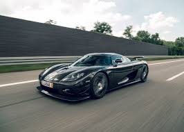

Koenigsegg: The Swedish Hypercar Revolution
Koenigsegg Automotive AB is a world-famous Swedish manufacturer known for building
some of the fastest, most advanced, and most exclusive hypercars ever created.
With cutting-edge innovation and extreme engineering, Koenigsegg continues to push
the limits of performance and design in the automobile world.
A Vision That Became a Legend

Koenigsegg was founded in 1994 by Christian von Koenigsegg, who dreamed of creating
the perfect supercar. With passion, creativity, and engineering excellence,
his vision grew into one of the most respected hypercar companies in the world.
Today, Koenigsegg stands as a symbol of ambition, precision, and automotive innovation.
Engineering and Innovation
Koenigsegg is not just a car manufacturer—it is a technology pioneer. The company
designs and develops its own engines, carbon fiber bodies, and innovative systems.
Key innovations include:
→ Freevalve Engine Technology
→ Carbon Fiber Monocoque Chassis
→ Advanced Aerodynamics
→ Lightweight Hybrid Power Units
→ Record-Breaking Performance Engineering
Every Koenigsegg is built with extreme attention to detail and futuristic engineering.
World Records and Iconic Models
Koenigsegg cars have set multiple top-speed and performance records.
Famous models include:
→ Koenigsegg CCX

→ Agera & Agera RS

→ Regera Hybrid

→ Jesko

→ Gemera (4-seater Hypercar)

The Agera RS once held the record as the fastest production car, proving Koenigsegg’s
leadership in performance engineering.
Koenigsegg Museum and Facility
Located in Ängelholm, Sweden, the Koenigsegg headquarters and museum offer visitors
a close look into the world of hypercar creation.
The museum showcases:
→ The first Koenigsegg prototypes
→ Rare and special edition models
→ Engine and technology displays
→ Manufacturing and assembly areas
→ Historic achievements and world-record trophies
Visitors can also experience how each car is hand-built with precision and craftsmanship,
making Koenigsegg one of the most exclusive automotive brands in the world.
Sustainability Meets Speed
Koenigsegg proves that high performance can exist with environmental responsibility. Many
models can run on:
→ Ethanol
→ Methanol
→ Biofuel
→ Hybrid-electric systems
The company’s goal is to build the world’s fastest cars while reducing environmental impact.
Exclusivity and Craftsmanship
Koenigsegg cars are produced in extremely limited numbers. Each vehicle is custom-built,
engineered with precision, and made to last.Owning a Koenigsegg is considered a rare
achievement and a symbol of luxury and innovation.
Conclusion:
Koenigsegg is more than a car brand — it is a revolution in automotive engineering.
Through innovative technology, record-breaking performance, and visionary design,
Koenigsegg continues to redefine what a hypercar can be.
Koenigsegg: Where imagination becomes engineering, and engineering becomes speed.